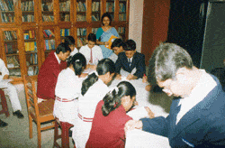

Home
Vision
History
Location
Organisation
Curriculum
School Uniform
Teaching Staff
Facilities
Activities
Rules
Register online
Photogallery
Contact Us
Site Map
Facilities
Education aims, to quote N. C. Dourett, to lead, to bring forth and educate what has been inner, latent and dormant potential secret within the human being. It behoves that the students must get all the facilities to unfold their inner traits when considered from different angles. The school has the following facilities
Science Laboratories:
The school has three separate laboratories one each for Physics, Chemistry and Biology, each being well equipped with standard apparatus, materials and other accessories.
PHYSICS LABORATORY
CHEMISTRY LABORATORY
Computer Laboratory:
The school has an up-to-date, richly equipped Computer Lab provided with 20 Computer System and functioning under the supervision of qualified trainers to impart training on Computer Applications.
COMPUTER LABORATORY
Library :

The school has a library – cum – reading room with more than 8000 titles and is efficiently managed. It proves to be instrumental in putting progressive methods into practice and provides opportunity for self study. Students are encouraged to borrow books in order to enhance their reading habits as well as use them as reference for their project works.
Medical Facilities:
There is provision for regular medical check-up of the students by qualified Doctors. Some essential medicines are always available in the stock so that immediate relief can be made available to the sick students.
Special attention is paid towards the cleanliness by the regular use of disinfectants. Floors are cleansed everyday. There is a separate arrangement of lavatories and urinals for girls and boys on every floor. They are so designed that sufficient light reaches them. Their cleanliness is maintained regularly.
Drinking Water:
School offers facilities of clean and medicated drinking water on each floor with well protected and conveniently located water taps.
Clubs:
There are different clubs functioning under the able guidance of teachers and students to provide greater opportunity to the students for learning and for personality development. Thus these clubs like Cultural, Sports, Library, Audio-visual, Nature Club etc served along with mass media, press, television and News papers keep the students well informed. Students at different levels are associated with almost all the news papers for reading writing and participating in various activities if and when organized by these agencies. All these agencies along with different compartments of the school make CPS an ideal epitome of social life.
Home Bulletin:
There is provision of publishing periodical bulletin giving an account of different activities of the school both inside and outside.
Powered by Google.com